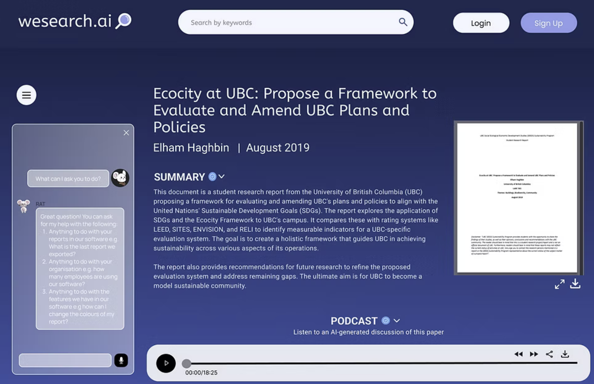
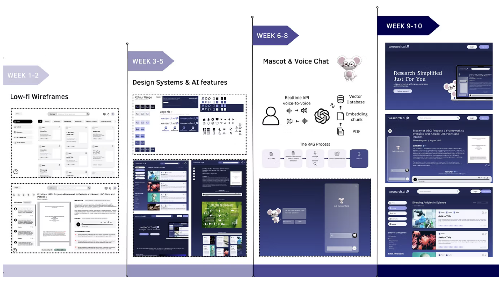

Knowledge
Translation
An AI platform making academic research more accessible, created in collaboration with UBC Library.
Project Introduction
Knowledge Translation is an AI powered web platform created in collaboration with UBC Library to make academic research easier to understand and access.
The platform transforms complex research into accessible formats, including text summaries, podcasts, infographics, and conversational interaction. As Co Project Manager and UI Sub Team Lead, I supported the overall production process while leading the design workflow for the user facing platform.
Role & Responsibilities
Co PM and UI Sub Team Lead. I kept the team organized and aligned while leading the UI design workflow from wireframes to delivery.
Production and Project Coordination
Scrum-based planning in Notion across sub teams. Tracked priorities, ownership, blockers, and dependencies. Translated the project vision into focused weekly goals and kept visibility high across workstreams.
UI Sub Team Leadership
Led the UI sub team from wireframes to high-fidelity prototypes. Built and maintained a shared design system. Connected interface decisions to accessibility, user clarity, and development handoffs.
Stakeholder and Cross Functional Alignment
Coordinated communication between the team, instructors, and UBC Library. Documented decisions, ownership, and next actions across all workstreams. Translated stakeholder goals into clear production priorities.

Knowledge Translation web platform interface
Production Journey

Knowledge Translation project timeline
Define the Accessibility Goal
Project kickoff
Aligned the team around a clear problem statement, defined the project direction, and organized the early work into focused priorities and sub teams.
Structure the Cross Functional Workflow
Production setup
Co created the project plan, organized Scrum based tracking in Notion, clarified ownership, and made cross team dependencies visible so workstreams could move independently while staying connected.
Build the Platform Experience
Design and development
Led the UI workflow from wireframes to prototypes, maintained the design system, and coordinated design-to-development handoffs.
Review and Iterate
Feedback and refinement
Organized feedback into themes, clarified priorities, and updated the production plan without disrupting dependent work.
Align the Final Platform
Integration and delivery
Coordinated final cross-team dependencies and kept visibility over completion priorities as interface, AI, and content systems came together.

Final platform: interface and mascot chat feature
Problem → Response → Outcome
A large cross-functional student team, an AI platform, and a 10-week timeline. My focus was cross-workstream visibility, connected delivery, and turning broad stakeholder goals into clear production priorities.
Coordinating a Large Cross-Functional Team
Multiple workstreams — UI, development, AI, research, content, and stakeholder communication — each moving at a different pace, with real risks around unclear ownership, hidden dependencies, and disconnected progress.
Co-managed through a shared Scrum workflow in Notion with visible ownership, priorities, and milestones. Regular meetings and written updates surfaced blockers and clarified cross-team dependencies.
Sub teams gained a clearer view of progress and could move independently while staying aligned to the delivery timeline.
Connecting Sub Team Progress to Overall Delivery
Supporting detailed UI production while keeping the design workstream connected to development, AI integration, content readiness, and the broader schedule. Sub team progress didn't always mean a feature was implementation-ready.
Connected UI tasks to shared milestones and tracked dependencies beyond the design team. Coordinated handoffs, clarified implementation requirements, and adjusted priorities when dependent systems weren't ready.
The UI team stayed productive without producing work isolated from implementation. Handoffs became clearer and the final interface aligned with what the full team could deliver.
Turning Broad Feedback into Clear Priorities
Feedback covered accessibility, navigation, content, and feasibility — more than the team could act on within a 10-week timeline.
Organized feedback into themes and evaluated each by user value, urgency, effort, and project alignment. Important changes became tasks; lower-priority ideas stayed documented.
The team responded to meaningful feedback while protecting the timeline. Iteration stayed focused and connected to shared priorities.
What I Carry Forward
01
Visibility Connects Independent Teams
Cross-functional teams need autonomy to move, but also a shared view of priorities and dependencies. Transparent production keeps teams independent without losing alignment.
02
Local Progress Must Support Shared Delivery
Sub team progress only creates value when it connects to the wider plan. Linking tasks, handoffs, and review points to shared milestones keeps work implementable and aligned.
03
Feedback Needs a Decision Framework
Stakeholder feedback needs evaluation before it becomes work. Assessing by user value, effort, and project goals turns broad input into focused production decisions.